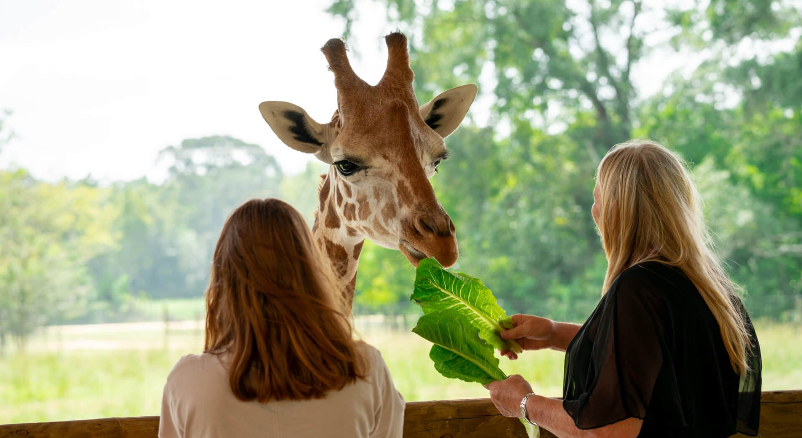
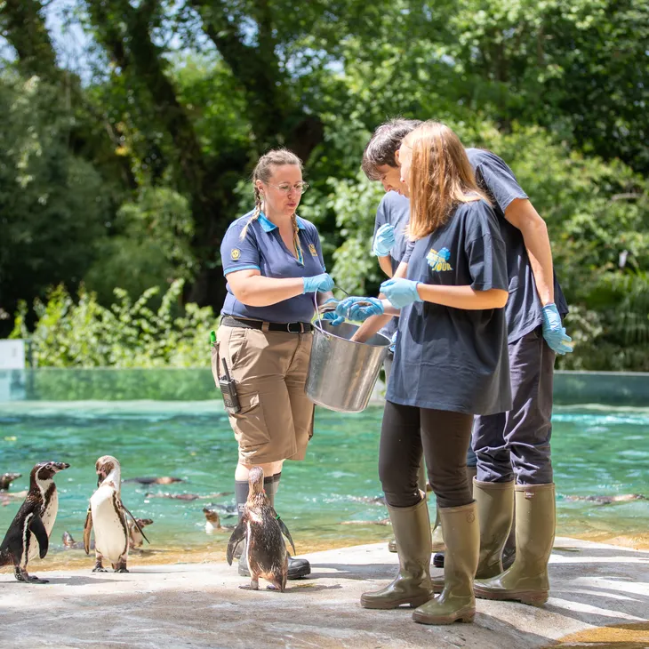
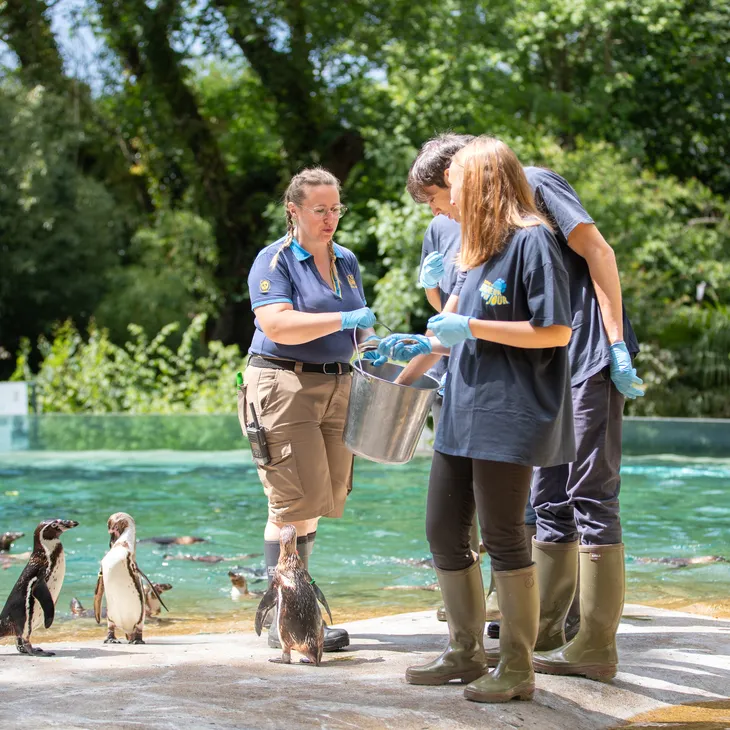
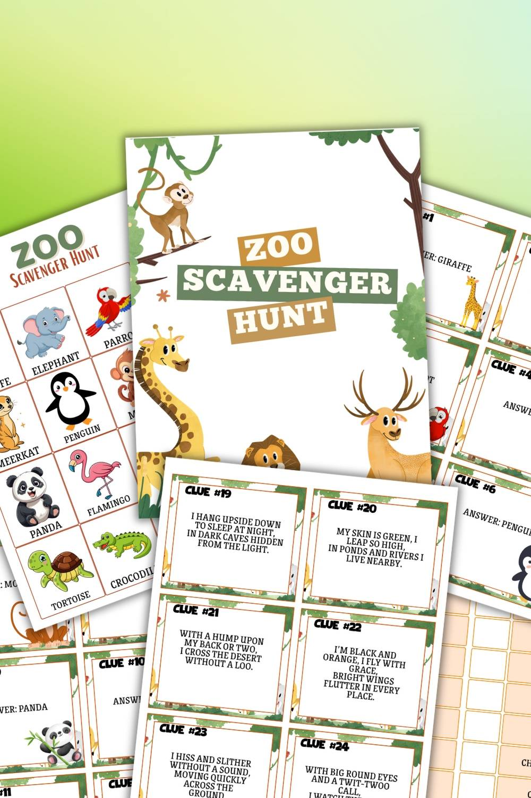
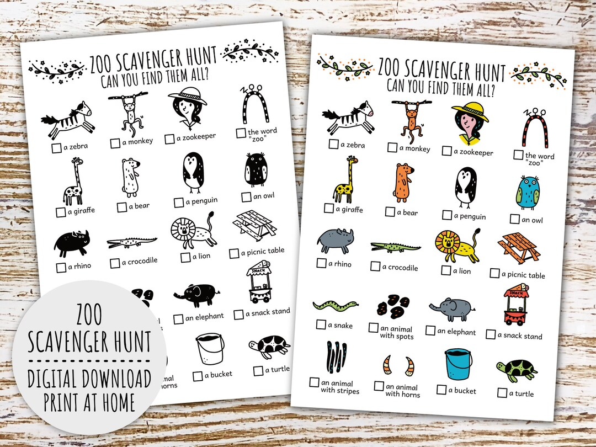
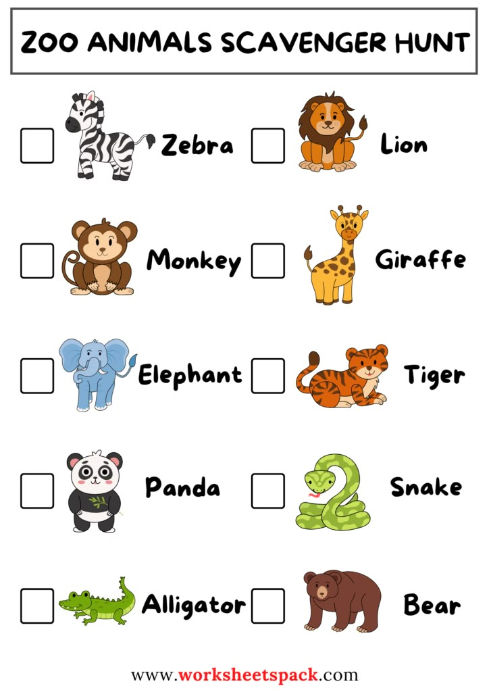

Introduction aux activités du zoo
Le zoo propose des activités ludiques et éducatives pour tous : des expériences immersives pour les adultes et des jeux amusants pour les enfants, afin de rendre la visite enrichissante et mémorable.
Expérience Soigneur d’un jour
Participez à une activité immersive où vous pouvez découvrir le travail des soigneurs et apprendre sur les animaux.


Visite privée guidée
Profitez d’une visite personnalisée avec un guide animalier pour découvrir les espèces du zoo.


Nourrissage des animaux
Les enfants et les adultes assistent à des moments ludiques comme le “goûter des animaux” pour observer comment ils sont nourris.
 

Jeu de piste / chasse au trésor
Activité interactive avec énigmes et missions autour des animaux et éléments du zoo.
  